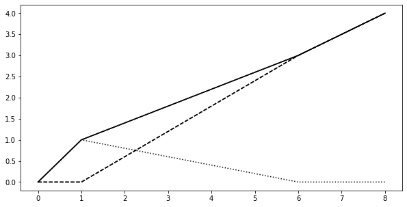

import sys
REL_DIR = "../../../"
sys.path.append(REL_DIR)
Getting Started¶
Installation¶
The latest version of the paminco package and the necessary dependencies can be installed directly
from GitHub using pip:
pip install git+https://github.com/paminco/paminco.git@setup_tester
Simple MCA example¶
Consider the following graph where four vertices (\(s, v_1, v_2, t\)) are connected with five edges.

For each edge a cost function \(F_e\) is specified, e.g. the cost on edge \(e_1\) given an edge flow \(x_1\) are \(F_{e_1}(x_1) = x_1^2\). We can setup the above network by specifying edge, cost and demand data as follows:
import numpy as np
from paminco import Network, MCA
edge_data = np.array([[ "s", "v1"],
[ "s", "v2"],
["v1", "v2"],
["v1", "t"],
["v2", "t"]])
poly_cost = np.array([[0, 0, 1], # F_0(x) = 0 * x^0 + 0 * x^1 + 1 * x^2
[0, 3, 0.5], # F_0(x) = 0 * x^0 + 3 * x^1 + 0.5 * x^2
[0, 0, 0.5],
[0, 3, 0.5],
[0, 0, 1]])
demand_data = (("s", "t", 1))
d = {"s": 0, "v1": 1, "v2": 2, "t": 3} # determines how labels are mapped to indices
net = Network(edge_data,
cost_data=poly_cost,
demand_data=demand_data,
kw_edge={"map_labels_to_indices": d})
---------------------------------------------------------------------------
ImportError Traceback (most recent call last)
/tmp/ipykernel_2092/3526317686.py in <module>
1 import numpy as np
----> 2 from paminco import Network, MCA
3
4 edge_data = np.array([[ "s", "v1"],
5 [ "s", "v2"],
ImportError: cannot import name 'Network' from 'paminco' (unknown location)
A parametric mincost flow can be found with the MCA algorithm:
mca = MCA(net, lambda_max=8)
mca.run(print=True)
Iteration 1 | λ ∈ [0.000, 1.000] | ↑ e* = 3 ∈ E* = [1, 3]
Iteration 2 | λ ∈ [1.000, 1.000] | ↑ e* = 1
Iteration 3 | λ ∈ [1.000, 6.000] | ↓ e* = 2
This results in the following parametric edge flows, the mincost flow on an edge w.r.t. to the demand factor \(\lambda\).
import matplotlib.pyplot as plt
fig, ax = plt.subplots(figsize=(10, 5))
x = np.linspace(0, 8, 9)
mca.plot_flow_on_edge(0, x, ax=ax, color="black")
mca.plot_flow_on_edge(1, x, ax=ax, color="black", linestyle="dashed")
mca.plot_flow_on_edge(2, x, ax=ax, color="black", linestyle="dotted")
mca.plot_flow_on_edge(3, x, ax=ax, color="black", linestyle="dashed")
mca.plot_flow_on_edge(4, x, ax=ax, color="black")
